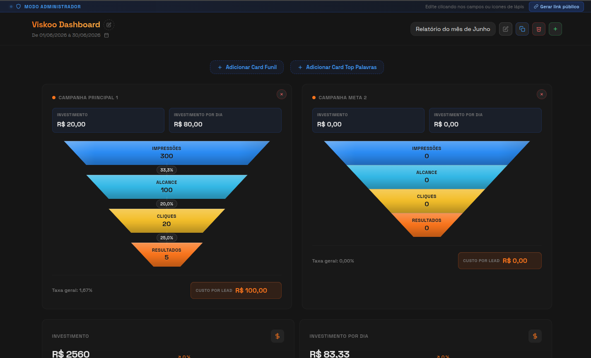
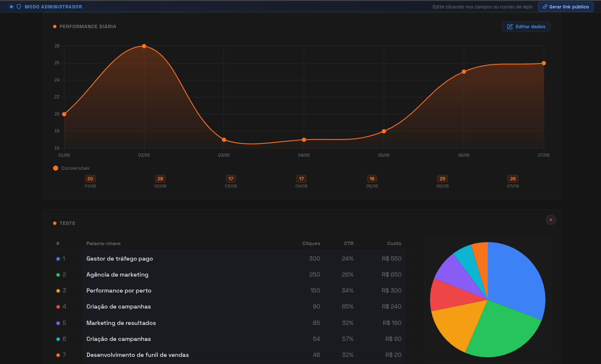
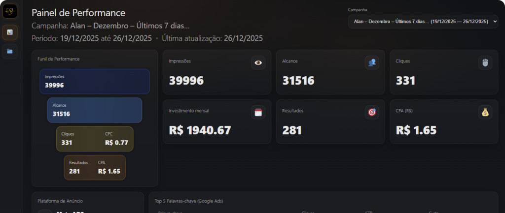

Entregue dashboards profissionais de tráfego pago sem depender de planilhas, PDFs ou relatórios confusos.
Com o Viskoo Dashboard, agências e gestores de tráfego criam dashboards por cliente, atualizam métricas direto no WordPress e compartilham links públicos com prazo de expiração.
- Dashboards individuais por cliente
- Links públicos com expiração
- Edição rápida em modo administrador
- Instalação direta no WordPress
Menos tempo montando relatório. Mais clareza para mostrar resultado.
Seu relatório ainda parece mais trabalhoso do que a própria campanha?
Quem trabalha com tráfego pago sabe: o cliente quer entender o que está acontecendo, mas nem sempre planilhas, prints do gerenciador de anúncios ou PDFs longos ajudam.
O resultado é um ciclo cansativo:
O Viskoo Dashboard foi criado para resolver essa parte da operação.
Apresentar resultados com clareza, controle e aparência profissional.
Solução
Um dashboard de tráfego pago dentro do seu WordPress.
Você edita tudo em modo administrador e compartilha com o cliente um link público temporário, sem precisar liberar acesso ao painel do WordPress.
Clientes
Crie uma área para cada cliente e organize seus relatórios em um único lugar.
Relatórios
Cadastre relatórios por período, duplique estruturas e mantenha histórico de acompanhamento.
Cards de Funil
Mostre impressões, alcance, cliques, resultados, investimento, custo por lead e taxa geral.
KPIs
Apresente investimento total e investimento diário em cards simples e diretos.
Performance Diária
Exiba conversões por dia em gráfico visual e objetivo.
Top Palavras
Organize palavras-chave, cliques, CTR e custo em cards com tabela e gráfico.
Links com Expiração
Gere links para clientes com validade definida. Quando expiram, deixam de funcionar automaticamente.
Modo Administrador
Ao acessar logado, edite campos, datas, relatórios e cards direto na dashboard.
Feito para quem precisa mostrar resultado com frequência.
O Viskoo Dashboard foi pensado para profissionais que precisam transformar dados de marketing em uma apresentação clara para clientes.
Donos de agência de marketing
Centralize a entrega de relatórios para vários clientes em uma plataforma única.
Gestores de tráfego pago
Apresente resultados de campanhas de forma clara e profissional.
Consultores de performance
Demonstre o valor do trabalho com dashboards visuais e bem estruturadas.
Social medias e influenciadores
Entregue relatórios de anúncios de forma profissional e organizada.
Profissionais de marketing
Que atendem vários clientes e precisam padronizar a entrega de relatórios.
Equipes de marketing
Que querem padronizar a entrega de relatórios e aumentar a percepção de valor.
Não é apenas sobre deixar bonito. É sobre reduzir atrito, ganhar velocidade e aumentar a percepção de valor do seu trabalho.
O que muda na sua rotina
Você entrega uma experiência mais profissional.
Em vez de enviar arquivos soltos, você envia um link organizado, visual e direto ao ponto.
Você ganha velocidade na atualização.
Os dados podem ser editados direto na dashboard em modo administrador, sem reconstruir um relatório inteiro.
Você controla o acesso.
Links públicos podem ter prazo de validade. Isso ajuda a evitar dashboards antigos circulando indefinidamente.
Você padroniza sua entrega.
Use a mesma estrutura para vários clientes, mantendo consistência na comunicação dos resultados.
Você aumenta a percepção de valor.
Um relatório bem apresentado ajuda o cliente a entender melhor o trabalho que está sendo feito.
Resultado
Mais credibilidade, mais retenção, mais disposição para renovar ou expandir contrato.
Do WordPress para o cliente em poucos passos.
O cliente acessa apenas a dashboard. A área administrativa é reservada para quem está logado com permissão.
Passo 1
Instale o plugin no seu WordPress.
Passo 2
Cadastre seus clientes.
Passo 3
Crie relatórios por cliente e período.
Passo 4
Adicione cards de funil, performance e top palavras.
Passo 5
Edite os dados em modo administrador.
Passo 6
Gere um link público com expiração e envie ao cliente.
Recursos pensados para a rotina de agência
Dashboard por cliente
Organize relatórios individualmente e facilite a gestão da sua carteira.
Links com expiração
Compartilhe com segurança e defina por quantos dias o cliente terá acesso.
Edição visual
Atualize campos, datas, cards e indicadores direto na tela.
Duplicação de relatórios
Reaproveite estruturas e acelere a criação de novos períodos.
Cards de funil
Mostre a evolução de impressões até resultados com taxa geral e custo por lead.
Top palavras
Apresente dados de palavras-chave com tabela e gráfico.
Performance diária
Mostre conversões por dia em um gráfico simples e objetivo.
WordPress nativo
Gerencie tudo dentro do ambiente que muitos profissionais já utilizam.
Conheça a interface do plugin
Visualize como o Viskoo Dashboard se adapta aos diferentes tipos de visualização e edição.


Assine, baixe e acompanhe as evoluções do plugin.
O Viskoo Dashboard funciona por assinatura. Enquanto sua assinatura estiver ativa, você recebe acesso ao plugin e as novas atualizações liberadas.
Sempre que uma nova versão estiver disponível, você poderá baixar e utilizar a atualização conforme os termos da sua assinatura.
Código aberto para assinantes
Você tem acesso aos arquivos do plugin, pode entender como ele funciona e utilizar as versões disponíveis nos seus projetos enquanto mantiver sua assinatura ativa.

Criado a partir de uma necessidade real de apresentação de resultados.
O Viskoo Dashboard nasce para resolver um problema comum em agências e operações de tráfego: transformar métricas em uma entrega que o cliente consiga acessar, entender e valorizar.
Em vez de depender de relatórios manuais, o plugin centraliza a apresentação dos dados em uma experiência visual, compartilhável e controlada.
A validação vem de agências e gestores que já utilizam o Viskoo Dashboard para melhorar a entrega de relatórios.
Comece a entregar relatórios como uma agência mais profissional.
Com a assinatura do Viskoo Dashboard, você recebe acesso ao plugin, pode instalar no seu WordPress e usar a estrutura para criar dashboards de clientes.
O que está incluído:
- Plugin Viskoo Dashboard completo
- Criação ilimitada de clientes e relatórios
- Dashboard visual com cards editáveis
- Links públicos com expiração automática
- Atualizações enquanto a assinatura estiver ativa
- Acesso aos arquivos do plugin conforme os termos
R$ 19,90
por mês de assinatura
Assinar agoraAcesso ao plugin e atualizações enquanto sua assinatura estiver ativa.
Teste na sua própria operação.
Se houver garantia comercial, você terá direito a testar o Viskoo Dashboard. Se não fizer sentido para sua rotina, solicite o cancelamento conforme nossa política.
Consulte nossa política de cancelamento de assinatura para mais detalhes.
Perguntas frequentes
O Viskoo Dashboard é um SaaS?
Não exatamente. O Viskoo Dashboard é um plugin para WordPress disponibilizado por assinatura. Você instala no seu próprio ambiente WordPress e usa para criar dashboards para seus clientes.
Preciso dar acesso ao WordPress para meu cliente?
Não. O cliente acessa a dashboard por um link público com token. A edição fica disponível apenas para administradores logados.
Os links expiram?
Sim. Você define a validade do link público. Links expirados deixam de funcionar e podem ser limpos automaticamente.
Posso criar vários clientes?
Sim. O plugin permite cadastrar clientes ilimitados e organizar relatórios por cliente.
Posso atualizar os dados depois?
Sim. Em modo administrador, você pode editar dados da dashboard, como período, funis, KPIs, performance e top palavras.
O plugin recebe atualizações?
Sim. Enquanto sua assinatura estiver ativa, você terá acesso às atualizações liberadas.
O que significa código aberto para assinantes?
Significa que os assinantes têm acesso aos arquivos do plugin e podem utilizar as versões disponíveis conforme os termos da assinatura.
Funciona para qualquer tipo de agência?
Ele foi pensado principalmente para agências, gestores de tráfego e profissionais de marketing que apresentam resultados de campanhas pagas para clientes.
Transforme seus relatórios em uma entrega mais clara, visual e profissional.
Pare de gastar energia montando relatórios manuais toda vez que precisa mostrar resultados. Use o Viskoo Dashboard para centralizar a apresentação, controlar o acesso e entregar uma experiência melhor para seus clientes.
Assinar o Viskoo DashboardPlugin WordPress por assinatura, com acesso a atualizações enquanto sua assinatura estiver ativa.